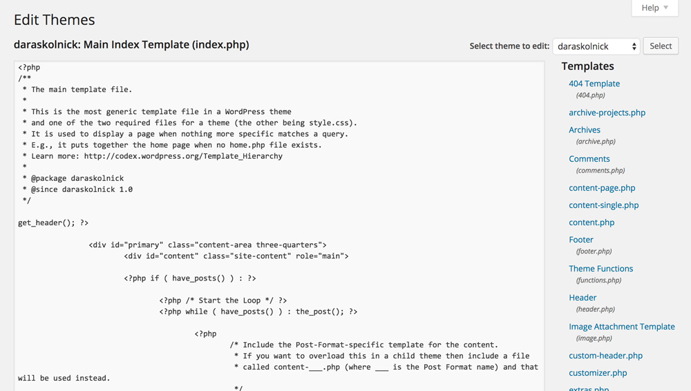
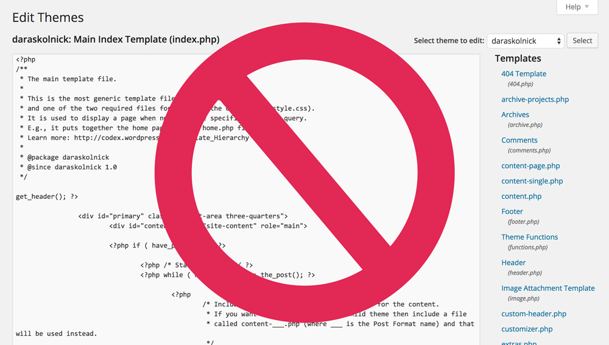
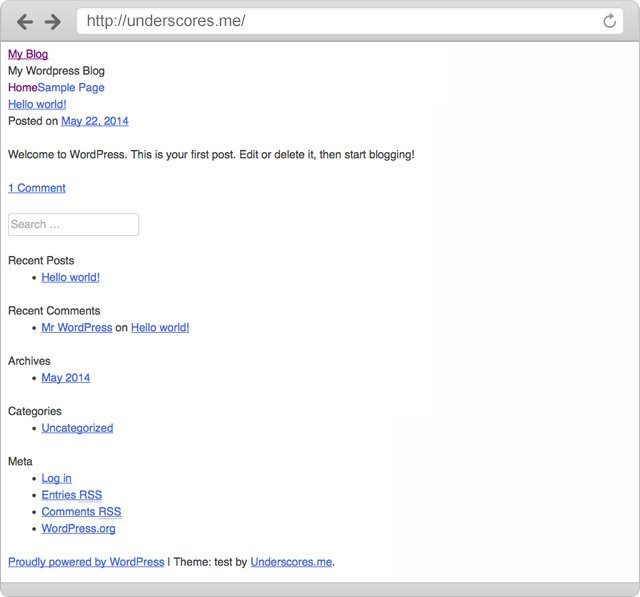
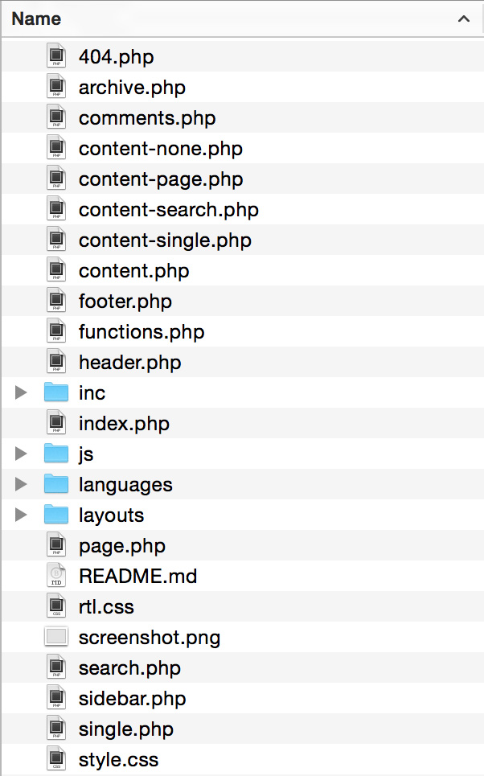
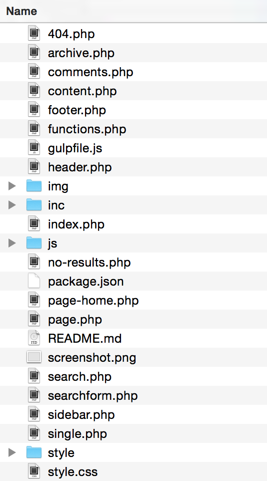
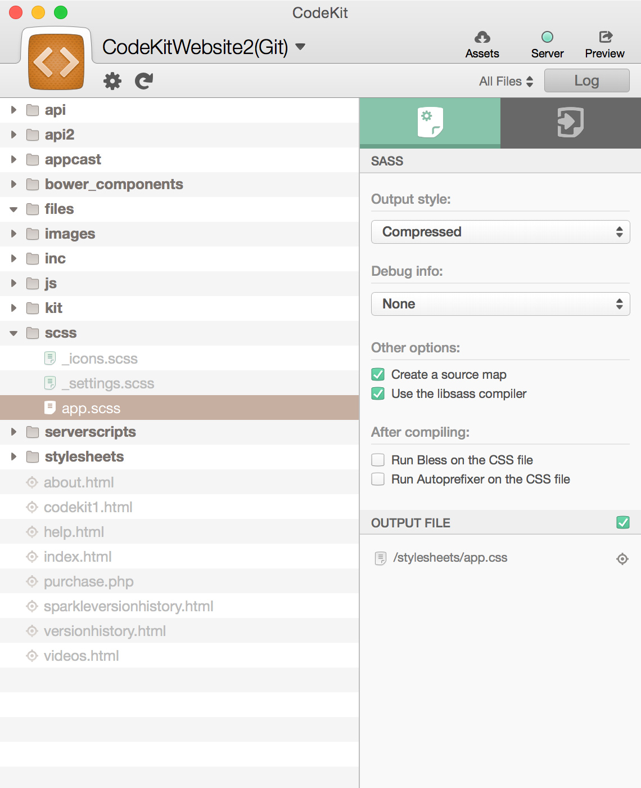

Levelling up your WordPress development workflow
with @daraskolnick
By the way...
I'm taking the info from this talk, expanding on it, and turning it into a course, launching Spring 2016.
Interested? Sign up for more info!
Hi, I'm Dara.
Nice to meet you!
I'm @daraskolnick basically everywhere on the Internet.
A little about me.
I...
- live in Toronto
- work as web designer & front end developer
- have been developing WP themes for 9 years
- run my own small business
- lead Ladies Learning Code workshops & mentor at HackerYou
- am a first time WordCamp speaker!
This talk is aimed at:
WordPress theme developers who create custom (parent) themes
Suggestions can apply to either solo devs or teams.
So, why is having a good workflow so important?
1. You can automate lots of non-fun tasks
Who loves compressing images, linting code, and creating sprites?
Anyone?
2. A good workflow saves you time.
Time = $$
But more importantly...
Time = freedom
WordPress dev is great, of course...
but having the time to pursue other things in life is also pretty great.
3. You can apply the best, sexiest front-end dev practices to WordPress theming
If you've ever wondered...
If you've ever wondered...
Then this talk is for you!
First Disclaimer
There's no right way to do front-end development — this is just one way.
Devs have a lot of opinions/feels about the "right" way to do things
Don't be intimidated by needing to use the "right" tools — see what works best for you.
Second Disclaimer
Most of the not-so-good dev practices I'll talk about come from first hand experience.
Workflow improvement #1
Developing locally
Why develop locally?
- No White Screen of Death™ on a client's live site
- Local sites load more quickly
- No embarrassment
ifwhen you eff things up - Allows you to use version control
You're using version control, right? Right? - You can use task runners, CSS preprocessors, etc.
If you're still doing this...
If you're still doing this...
We need to talk.
My local dev process:
- Develop the entire website locally
- Along the way, commit changes to git and push to Bitbucket
- Copy local site to staging server
- Copy staging site to client's server
Ifwhen changes are needed after initial development, make them on the local copy and push them to staging, and then live.
My local dev process:
- At no point am I ever making changes directly to the live site.
- When you make all changes on your local copy first, you don't have to keep track of which codebase is the latest/correct version.
My Local dev environment of choice:
MAMP/MAMP Pro (Mac + Windows)
Other similar options:
What MAMP does
- the "AMP" in MAMP/XAMPP/AMPPS stands for Apache, MySQL and PHP
- MySQL and PHP are required to run WP and Apache is highly recommended.
- Replicates setup of common web hosts on your computer
- Free MAMP gives you a local server located at http://localhost:8888
- MAMP Pro lets you assign custom domain names to each local site (e.g. http://sitename.dev)
Setting up your first local WordPress site
Installing WordPress with MAMP is as easy as...
- Downloading WordPress and putting it in the folder that MAMP is watching
- Setting up a new database in phpMyAdmin (also conveniently bundled with MAMP)
- Editing wp-config.php to point at the database you just created
- Congrats, friend! You now have a WordPress site running on your computer.
For more detailed instructions, CSS Tricks has a great screencast on this very topic.
Workflow improvement #2
Using a starter theme
Time-wasting ways to start custom themes include:
- Coding your theme from scratch
- Using an old theme of yours as a starter theme
- Using a default theme (like twentyfourteen) as a starter theme
Time waster #1:
Coding your theme from scratch
- Extremely repetitive
- Extremely time consuming
- Too much time on gruntwork and less on interesting work
Time wasters #2 + 3:
Using a finished theme (yours or WP's) as your starter theme
- Lots of time spent undoing old work (either yours or someone else's)
- Easy to make poor coding decisions based on laziness/what's already there
- Often end up with a lot of code bloat when stuff from the old theme that's irrelevant to yours sticks around
The better way:
Use a real starter theme!
A starter theme is a barebones theme that acts as a foundation for your custom theme.
A few popular starter themes
- Underscores (made by Automattic)
- Roots
- Bones
Underscores starts off like this:
Basic file structure is taken care of for you.
A good starter theme will also take care of things like:
- Basic CSS for WordPress functionality you may forget about (say, image alignment classes and galleries)
- Functions for common theme tasks (like setting up menus and widget areas)
- Adhering to WordPress coding standards (Underscores is especially good with this for obvious reasons)
Starter themes FTW!
The tedious stuff is done for you and there's little to no styling to undo.
What if I told you we could take that one step further?
The best starter theme...
Is your own, personalized starter theme!
No one knows your own coding style as well as you do.
My starter theme is based on Underscores and contains:
- A customized functions.php file with all my commonly used functions
- A starter script.js file with a few starter functions that most themes use
- All my Sass partials set up as I like them with some useful variables and mixins
- My latest gulpfile.js and package.json (more on that in a minute)
2 example functions in my custom starter theme's functions.php file
/**
* Media - set default image link location to 'None'
*/
update_option('image_default_link_type','none');
/**
* Always Show Kitchen Sink in WYSIWYG Editor
*/
function unhide_kitchensink( $args ) {
$args['wordpress_adv_hidden'] = false;
return $args;
}
add_filter( 'tiny_mce_before_init', 'unhide_kitchensink' );
Another custom starter bonus
You can bake in more accessibility feature than you'll find in standard starters.
Where do I keep my starter theme?
There's no better place to store your starter theme than GitHub or Bitbucket.
Now, starting a new WordPress project is as easy as:
- Downloading WordPress and setting it up in MAMP/XAMPP/AMPPS/thing that contains 'AMP'
- Cloning your starter theme (or a fork of it) into /wp-content/themes/
- Logging into your new site's dashboard and activating your starter theme
- Git coding! Git it? Version control jokes are super cool.
Never used Git before? No worries!
I'll be talking more about it a little later and will give you some good starter resources.
Workflow improvement #3
Getting a task runner to do the boring stuff
Some of my favourite development tasks include:
- Remembering which browser prefixes to use in CSS
- Compressing my images
- Linting and minifying JS files
- Creating sprites
- Constantly refreshing my browser
The solution
/What are Grunt and Gulp?
Built on
$ Run on the command lineUse plugins to run tasks
Grunt or Gulp?
Devs love to argue
I personally use Gulp.
you have my blessing to use either one.
Gulp performs tasks that you configure in your gulpfile.js.
Your package.json file contains a list of your project's dependencies (aka Gulp plugins).
Gulp should run in your theme directory, not in the root directory of your WP installation.
My starter theme's files
A few example Gulp tasks
CSS tasks
gulp.task('sass', function() {
return gulp.src('style/style.scss')
.pipe(sass())
.pipe(autoprefixer('last 2 version', 'safari 5', 'ie 8', 'ie 9', 'opera 12.1', 'ios 6', 'android 4'))
.pipe(minifycss())
.pipe(gulp.dest(''))
});
In plain English
- Gulp takes our Sass file...
- Turns it in to regular CSS
- Runs it through Autoprefixer...
- Minifies the CSS...
- And, finally, saves the CSS file.
- (All in a matter of milliseconds.)
CSS tasks
gulp.task('sass', function() {
return gulp.src('style/style.scss')
.pipe(sass())
.pipe(autoprefixer('last 2 version', 'safari 5', 'ie 8', 'ie 9', 'opera 12.1', 'ios 6', 'android 4'))
.pipe(minifycss())
.pipe(gulp.dest(''))
});

Autoprefixer
Takes this CSS...
.thing-with-columns {
column-count: 3;
column-gap: 40px;
}
...checks caniuse.com for browser support...
And gives you this:
.thing-with-columns {
-webkit-column-count: 3;
-moz-column-count: 3;
column-count: 3;
-webkit-column-gap: 40px;
-moz-column-gap: 40px;
column-gap: 40px
}
:D
How to run gulp tasks
Type gulp [taskname] in your Terminal window.
JavaScript linting
gulp.task('lint', function() {
return gulp.src('js/script.js')
.pipe(jshint())
.pipe(jshint.reporter('default'));
});
JS concatenation + minification
gulp.task('scripts', function() {
return gulp.src(['js/plugins.js', 'js/script.js'])
.pipe(concat('script.min.js'))
.pipe(uglify())
.pipe(gulp.dest('js'));
});
Image compression
gulp.task('images', function() {
var imgSrc = 'img/source/*';
var imgDest = 'img';
return gulp.src(imgSrc)
.pipe(newer(imgDest))
.pipe(imagemin())
.pipe(gulp.dest(imgDest));
});
But I saved the best task for last
Typing gulp sass, gulp lint, gulp scripts, and gulp images over and over would sure get annoying, right?
My BFF, the Watch task
gulp.task('watch', function() {
// Listen on port 35729
server.listen(35729, function (err) {
if (err) {
return console.log(err)
};
// Watch .js files
gulp.watch('js/*.js', ['lint', 'scripts']);
// Watch .scss files
gulp.watch('**/*.scss', ['sass']);
// Watch image files
gulp.watch('img/source/*', ['images']);
});
});
Watches for your changes...
...runs the appropriate tasks...
... and uses LiveReload to automatically refresh your browser.
But... what if I'm scared of the command line?
CodeKit (Mac only)
Prepros
(Mac, Windows, Linux)
GUIs can be a great place to start
Like Gulp/Grunt, CodeKit/Prepros also watches your theme directory
Gulp resources
Workflow improvement #4
CSS Preprocessing
Variables
Plain ol' CSS
.container {
max-width: 980px;
}
a {
color: #b4c43d;
font-family: 'Gotham A', 'Gotham B', sans-serif;
}
Variables
Sass
// Fonts
$gotham: 'Gotham A', 'Gotham B', sans-serif;
// Global information
$pageWidth: 980px;
$fontSize: 16px;
// Colours
$green: #b4c43d;
$teal: #73c6ba;
$brown: #563016;
Variables
Sass
.container {
max-width: $pageWidth;
}
a {
color: $green;
font-family: $gotham;
}
Nesting
Plain ol' CSS
.main-navigation {
display: block;
}
.main-navigation ul {
list-style: none;
}
.main-navigation li {
float: left;
}
.main-navigation a {
color: #b4c43d;
}
.main-navigation a:hover {
color: #73c6ba;
}
Nesting
Sass
.main-navigation {
display: block;
ul {
list-style: none;
}
li {
float: left;
}
a {
color: $green;
&:hover {
color: $teal;
}
}
}
Partials
Divide your styles into logical sections
Partials
/*!
Theme Name: Super Awesome Theme
Theme URI: http://fakeyfake.fake
Author: Dara Skolnick
Author URI: http://daraskolnick.com
Description: The fakest theme in all the land
*/
@import "partials/reset";
@import "partials/variables";
@import "partials/global";
@import "partials/forms";
@import "partials/nav";
@import "partials/pages";
@import "partials/posts";
@import "partials/widgets";
Math
Plain ol' CSS
.sidebar {
width: 36.734693878%; /* 360px / 980px */
font-size: 1.3125em; /* 21px / 16px */
}
Math
Sass
.sidebar {
width: 360px / 980px * 100%;
font-size: 21px / 16px * 1em;
}
Math
Sass
.sidebar {
width: 360px / $pageWidth * 100%;
font-size: 20px / $fontSize * 1em;
}
Using Sass in your WordPress theme
style.scss → style.css
Workflow improvement #5
Deploying with Git
Before Git...
...deploying sites and making changes via FTP was a big pain.
Hey! what's wrong with FTP?
So glad you asked!
- Sooooo slow
- Easy to forget which files need updating
- Tempting to make changes directly on the server
- Therefore easy to get your local + remote copies out of sync
Deploying with Git
$ git add -A // adds all your changed files
$ git commit -m "A message describing the changes you made"
$ git push remote-name master // pushes your files to GitHub/Bitbucket/your site
Most projects of mine have three remotes: origin (Bitbucket), staging (my dev server) and live (client's server).
This is awesome because:
- Really easy (well, once you're used to it)
- Much faster uploads
- Never have to remember which files you changed
- Super easy to keep all copies in sync
Okay, so how do I set it up?
A few options
But I have no idea how to use Git - how do I start?
Resources for beginners:
WordPress-specific Git resources
If GUIs are more your style
- GitHub for Mac / GitHub for Windows (free, and can be used with non-GitHub remotes)
- Tower ($, Mac only)
If deploying with Git seems too complex for now...
Consider storing your client projects in private repositories to start.
Builds good habits and makes it easier to collaborate with other developers.
My Bitbucket account - public view
My Bitbucket account - logged in
You might be feeling like this right now
Feeling overwhelmed?
- Don't worry about doing everything at once
- Even the smallest workflow tweaks will save time